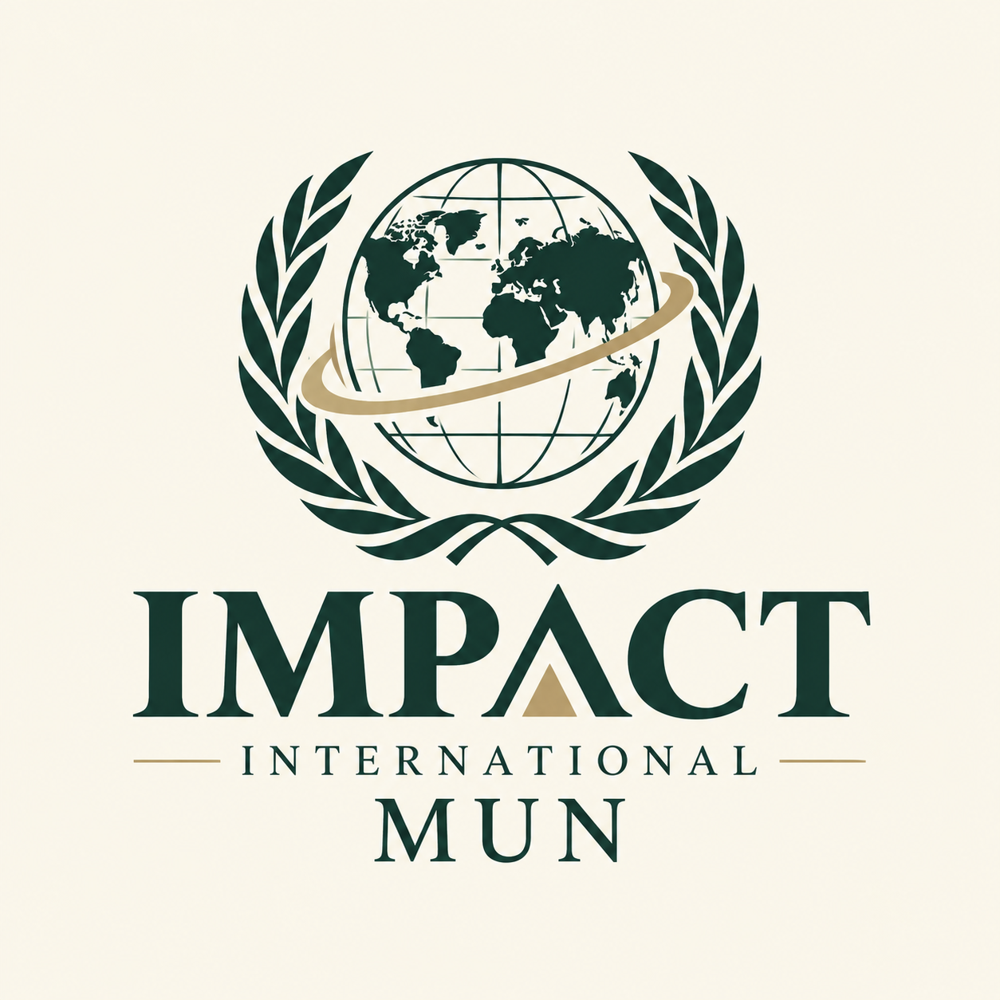

Represent
Step into the role of a country or representative and understand its interests, priorities and position.

SEASON I · YOUTH-LED DIPLOMACY
Impact International MUN is a Model United Nations conference by youths, for youths — built around real-world issues, meaningful debate and practical solutions.
THE EXPERIENCE
Model United Nations is an educational simulation of the United Nations where participants represent countries, research international issues, debate policy, negotiate with other delegates and work toward a resolution.
Step into the role of a country or representative and understand its interests, priorities and position.
Present arguments, challenge ideas and participate in structured diplomatic discussion.
Negotiate across different viewpoints and turn debate into a practical draft resolution.
WHY IMPACT?
Our conferences focus on questions that are already shaping society, technology and international policy — giving everyone a space to engage with them seriously.
SEASON I
Artificial intelligence is increasingly being used to support healthcare and medical diagnosis. Season I asks delegates to examine how its benefits can be encouraged while addressing safety, accountability, privacy, bias and access.
Delegates will consider the balance between innovation and patient protection, including questions around oversight, transparency, data governance, responsibility when AI-assisted decisions go wrong, and equitable access to reliable technologies.
JOIN THE CONFERENCE
Registration is completed through our official Google Form. Once you submit your details, the organizing team can review your registration and share the next steps.
Open Registration Form ↗Complete the official registration form with your participant details.
Wait for the organizing team to confirm your participation and committee placement.
Read the conference documents, research your allocation and prepare for committee.
Debate, negotiate and collaborate with other young delegates at Season I.
RESOURCE CENTRE
Everything you need to prepare for Impact International MUN will be collected here.